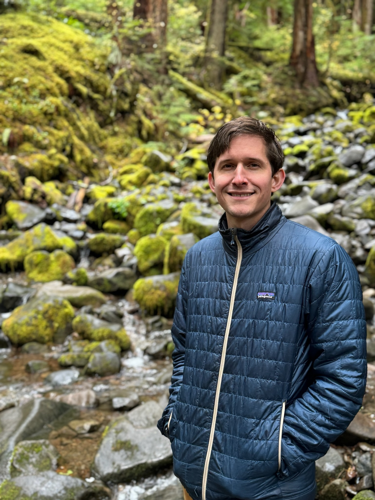

About Me

I am a statistician working at the intersection of spatial statistics, extreme value theory, and public health.
I recently received my PhD in Statistics & Operations Research from the University of North Carolina at Chapel Hill, where I was advised by Richard L. Smith. My dissertation develops scalable methods for spatial extreme value data fusion, with applications to coastal hazard projection under a changing climate.
Throughout my doctoral studies, I worked concurrently as a statistician in the Department of Biostatistics & Data Science at the Wake Forest School of Medicine, where my work spans opioid misuse surveillance, clinical trials, and statistical consulting.
My research interests include
- Spatial Extreme Value Theory
- Bayesian Hierarchical Modeling
- Scalable Gaussian Processes
- Spatial Data Fusion
- Environmental Extremes and Public Health
- Spatial Epidemiology